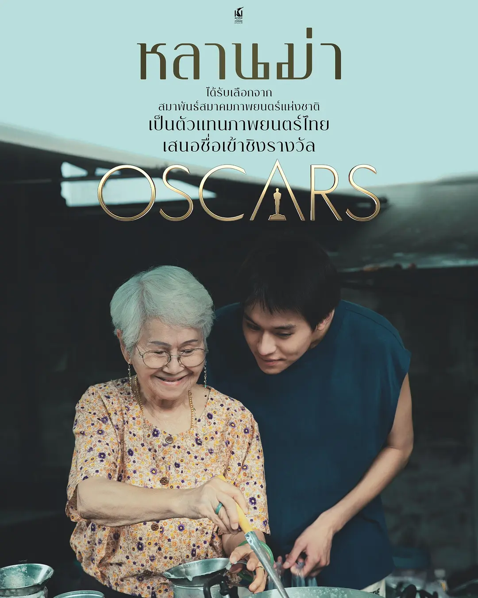

《姥姥的外孙》观后感

电影剧情大概是姥姥得了癌症，外孙看上了姥姥的遗产，就去照顾姥姥，希望姥姥最后会把遗产留给他。
而孙子在照顾姥姥的过程中，再次认识了姥姥，最后真切地为姥姥的离世而感到难过。
电影中的不少画面的都是阳光明媚的，音乐给人的感觉也是温馨和温暖的，故事里虽然有一些儿女的争执，对财产的觊觎，但让我感到最多的还是温情。
外孙出生的时候，姥姥种了一颗石榴树1，外孙小时候说石榴只能留给他吃，姥姥一直记着，谁也不让摘，而在得知外孙要卖她房子时，她什么也没说，只是给外孙摘了个石榴，告诉了他小时候的事情。
小时候外孙得了第一名，或许是姥姥对他的奖励，姥姥每个月给他存了一笔钱。
他们一起走路去银行存钱，路上外孙说，要姥姥一直存钱存到她离世的那一天，姥姥问道为什么，他说看到姥姥的房子很破旧，以后有钱了要给姥姥换一个更好的房子。
姥姥也记住了，最后虽然外孙没有得到姥姥的遗产，却收到了姥姥给他的存折，而外孙则用这笔钱给姥姥买了一个好看的坟墓，也确实是给姥姥买到了好的“房子”。
姥姥的大儿子顾着家庭，把母亲放在了一边，也很少来看望，但是他的女儿还是挺喜欢姥姥的，对姥姥也不错。
人在小的时候没有那么多的心机计算，一个人对你好，你就会对他好。
小的时候也会真心实意地说出很多承诺，长大之后要如何如何对照顾你的人好，虽然有些不切实际，但却是很真挚。
但是随着年岁渐长，很多东西都忘了，忘了以前身边亲人对自己的照顾，渐渐和他们变得疏远，明明小的时候他们照顾了自己很多，但长大后自己却没能给他们同样的关心和照顾。
我的外婆也在前些年去世了，我也回去的不多，陪伴得很少，唯有逢年过节给她一些钱，希望她能买些好吃的，平时出去可以打车而不用坐公交折腾。
但外婆其实也不会怎么花钱，她缺的不是钱，而是时间和陪伴。
虽然影片里的外孙最开始是为了遗产，但是这个过程中他和姥姥的相处时间很多，也多了很多对姥姥的认识。
而我以往回去也只是和外婆吃顿饭，相处的时间很少，很多以前小时候在外婆家的事情也不太记得了，其实也很想了解一下外公外婆的人生，但不知道如何开口，相处的时间也不多，如今只能空留遗憾了。
脚注:
弟弟出生的时候，父亲也种了一颗榕树，随着弟弟的成长，榕树也是枝繁叶茂长得很大。可惜前些年施工，挖断了根，让榕树枯死了。或许我以后也会在孩子出生的时候种上一棵树。